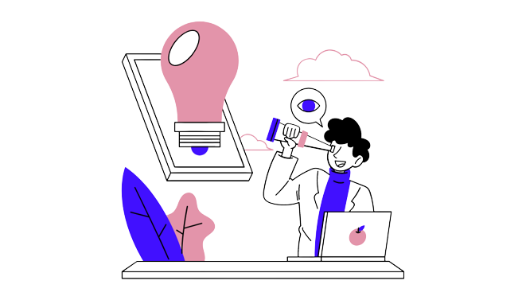
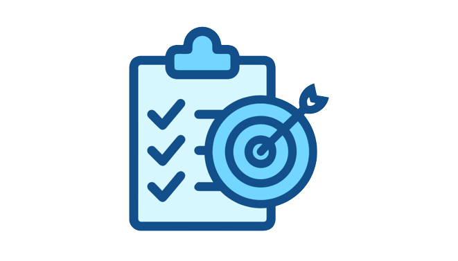

Webs-Makers es una empresa que se dedica a diseñar y desarrollar páginas web y otros elementos
informáticos relacionados. Esta empresa tiene una clara misión empresarial, una visión empresarial y
unos valores corporativos que definen su identidad como organización.
La misión empresarial de Webs-Makers es ofrecer soluciones innovadoras y de calidad en el desarrollo
de páginas web y otros elementos informáticos relacionados, para que sus clientes puedan alcanzar
sus objetivos empresariales y destacarse en un mercado cada vez más competitivo.

La visión empresarial de Webs-Makers es ser reconocidos como líderes en el mercado de diseño y
desarrollo de páginas web y otros elementos informáticos relacionados, a través de la innovación y
la excelencia en la calidad de los productos y servicios que ofrecen.
Los valores corporativos de Webs-Makers son la base de su cultura empresarial y guían su
comportamiento en todas las actividades que realizan. Estos valores son la calidad, la innovación,
el compromiso, la honestidad y la responsabilidad social.
La calidad es un valor fundamental para Webs-Makers, ya que su compromiso es ofrecer productos y
servicios de la más alta calidad para garantizar la satisfacción de sus clientes.
La innovación es otro de los valores más importantes de Webs-Makers, ya que buscan estar a la
vanguardia de las últimas tendencias y tecnologías en el diseño y desarrollo de páginas web y otros
elementos informáticos relacionados.
El compromiso es un valor que refleja la dedicación y el esfuerzo que Webs-Makers pone en cada
proyecto que lleva a cabo, para ofrecer a sus clientes soluciones personalizadas y adaptadas a sus
necesidades.
La honestidad es un valor fundamental para Webs-Makers, ya que creen en la importancia de establecer
relaciones transparentes y honestas con sus clientes, proveedores y empleados.
La responsabilidad social es un valor que refleja la preocupación de Webs-Makers por el impacto que
su actividad empresarial tiene en la sociedad y en el medio ambiente. Por ello, la empresa se
compromete a llevar a cabo sus actividades de forma sostenible y a contribuir al desarrollo de su
entorno social y ambiental.
En definitiva, la misión empresarial, la visión empresarial y los valores corporativos de
Webs-Makers son los pilares fundamentales que definen su identidad como empresa y que guían su
actividad empresarial para ofrecer soluciones de calidad, innovadoras y personalizadas a sus
clientes.